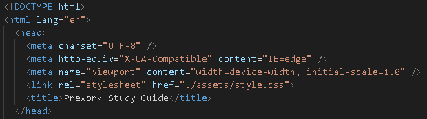
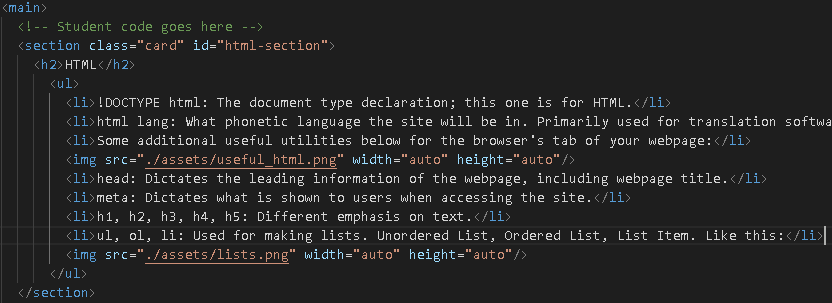
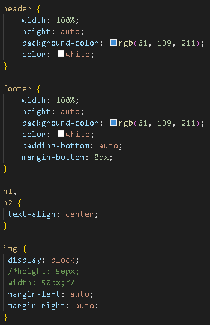
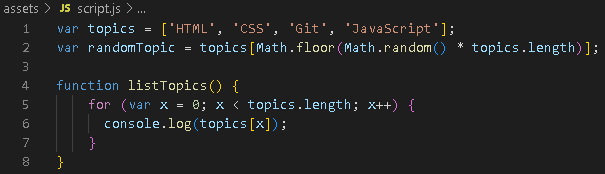

Prework Study Guide

✨ Please press F12 and switch to the console tab ✨
HTML
- !DOCTYPE html: The document type declaration; this one is for HTML.
- html lang: What phonetic language the site will be in. Primarily used for translation software, but is otherwise helpful.
- Some additional useful utilities below for the browser's tab of your webpage:

- head: Dictates the leading information of the webpage, including webpage title.
- meta: Dictates what is shown to users when accessing the site.
- h1, h2, h3, h4, h5: Different emphasis on text.
- ul, ol, li: Used for making lists. Unordered List, Ordered List, List Item. Like this:

CSS
- Inside CSS, you can make declarations for parts of your html, as long as that .css file is declared as the style of your html. Like this (with h1/h2 text):

- margin: Indicates how much space we want around the outside of an element.
- padding: Indicates how much space we want around the content inside an element.
Git
- code .: Opens VS Code in directory from the "Git Bash Here" right-click command.
- git status: Checks branch.
- git checkout -b branch-name: Creates new branch and switches to it.
- git checkout main: Switches to main branch, if necessary.
- git status: Verify current branch.
- git add -A: Adds current code to selected branch.
- git commit -m "patch-description": Commits to main of selected branch.
- git pull origin main: Synchronizes local branch with main/base branch.
- git push origin branch-name: Pushes changes to GitHub branch, which can then be merged to master on GitHub once I've filed a Pull request.
JS
- A variable is a named container that allows us to store data in our code.
- Control flow is the order in which a computer executes code in a script.
- JS allows data to be instantiated using arrays and loops. Here we use a for loop for a set of data and later pull a random topic from said array, like so:
